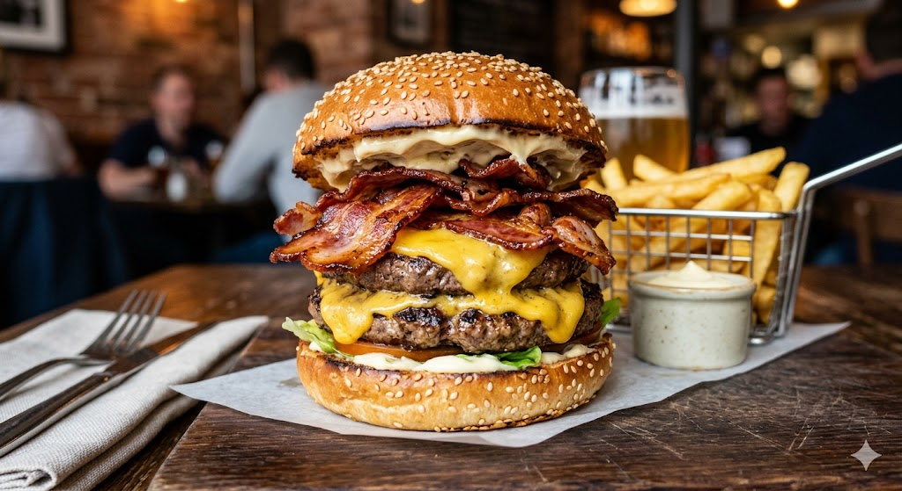

X-bruto

"O Bruto" é um hambúrguer robusto e suculento com dois discos de carne de fraldinha, muito queijo cheddar derretido e bacon supercrocante no pão de gergelim, oferecendo uma explosão de sabor intenso e irresistível para quem busca uma experiência farta.